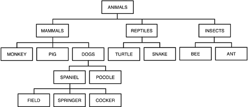
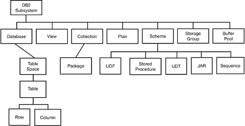

|
|
< Day Day Up > |
|
Granting and Revoking PrivilegesThe capability to access and modify DB2 objects and resources is authorized with SQL GRANT statements and removed with SQL REVOKE statements. The complete security picture, however, is not this simple. Many features of DB2 security can complicate security administration, such as
To enable authorization, the GRANT statement is used to bestow privileges on authids. There are ten different classes of privileges that can be granted:
Likewise, there are ten different classes of REVOKE statements that can be issued—one for each class of GRANT that can be issued. As might be expected, the REVOKE statement removes authority from authids. Authorization GuidelinesGuidelines for using GRANT and REVOKE to properly implement DB2 security are addressed in this section on authorization guidelines. Use Care When Granting PUBLIC AccessAdministering security can be a complex duty. Simply allowing blanket access to certain DB2 objects and resources often appears easier. The PUBLIC authority of DB2 gives the security administrator this option, but it is usually an unwise choice. For example, when many shops install DB2, they grant PUBLIC access to the default database, DSNDB04. Inevitably, users assign table spaces to this database. Because the table spaces are in a default area, they are difficult to monitor and control. The area quickly becomes overused. The DBA unit is unaware of some tables that exist. If an error occurs, recovery might be impossible. Additionally, the only way to move a table space to a different database is by dropping the table space and redefining it, specifying another database name. The only valid uses for PUBLIC access are for objects and resources that should be available to everyone who has access to the DB2 subsystem or if another security mechanism is in place. An example of the first use is granting the BINDADD privilege to PUBLIC in a test environment to allow all DB2 programmers to create DB2 application plans and packages. An example of the second use is granting EXECUTE authority for CICS transactions to PUBLIC and using CICS transaction security to control access. Other exceptions to avoiding PUBLIC access follow. In some installations, the security is thought to be adequately provided by application programs, so PUBLIC access is implemented for objects. Implementing this access is unwise unless ad hoc access to these objects is forbidden. If ad hoc use is allowed, users have access to the data through SPUFI or QMF, and could corrupt the data. In general, you should grant PUBLIC access only as a last resort. Even when ad hoc access is forbidden, objects granted PUBLIC access can be accessed by hackers or other folks who "bend the rules." Grant SELECT Authority on SYSIBM.SYSDUMMY1 to PUBLICBe sure to grant SELECT authority to PUBLIC for the SYSIBM.SYSDUMMY1 table. SYSIBM.SYSDUMMY1 contains a single row. It is designed to be used with SQL statements in which a table reference is needed but the table contents are unimportant. Grant DISPLAY Authority to PUBLICConsider granting DISPLAY authority for each DB2 subsystem to PUBLIC. PUBLIC DISPLAY authority will not pose a security threat, but can improve productivity. Application developers can use DISPLAY to identify active programs and utilities affecting performance without requiring DBA assistance. Do Not Repeat Security GrantsDB2 allows authorization to be granted multiple times to the same grantee for the same object or resource. As of DB2 V3, duplicate grants from the same grantor are not recorded in the DB2 Catalog. However, if the grants are from different grantors, duplicate authorizations still can occur. You should avoid duplicate authorizations because they cause confusion and clutter the DB2 Catalog with useless entries. Duplicate authority is recorded in the DB2 Catalog most commonly when SQL GRANT statements have been coded in a common CLIST, REXX EXEC, or standard job. An example is a CLIST used by application programmers to BIND a plan and then GRANT EXECUTE authority to a list of users automatically. You should not use this method because it can lead to duplicate authorization entries in the DB2 Catalog. Consolidate Security GrantsSELECT, INSERT, UPDATE, and DELETE authority should be granted using a single GRANT statement, instead of two to four separate statements. If one statement is used, one catalog row is created, instead of multiple rows (one for each GRANT statement that is issued). Do Not GRANT More Security Than NecessarySecure your DB2 application environment. Using group-level authority (for example, SYSADM or SYSOPR) is tempting because coding and maintaining it is easier. Group authorities, however, often provide more security than is required. SYSADM authority is the most powerful level of authorization provided by DB2 and should be reserved only for those DBAs and system programmers who need the authority and know how to use it wisely. If system-development staff members are allowed to access and modify table data but are not allowed to create indexes and tables, do not grant them DBADM authority. Simply grant them the appropriate authority for the appropriate tables—in this case, SELECT, UPDATE, INSERT, and DELETE. Plan DCL When Issuing DDLRemember that when DB2 objects are dropped, the security for the objects is dropped as well. If you plan to drop and re-create a database, for example, be prepared to re-create the security for the database and all subordinate objects (such as table spaces, tables, views, and indexes). Remember also that when plans are freed, all security is removed for the freed plans. Take this fact into account before freeing plans that you might need later. Be Aware of DB2's Built-in Security GroupingsDB2 provides several built-in groupings of authorization that can be assigned to users. When a user is granted one of the group-level authorities, all of the security that applies to the group will then apply to the user. Figure 1.5 in Chapter 1, "The Magic Words," outlines the DB2 security levels; refer to it now if you need to refresh your memory. In general, these group-level authorizations should be used for system users, such as DBAs, systems programmers, and operators. The authorization contained within these groups is useful for administrative users, but not for end users and developers. Use Group-Level Security and Secondary AuthidsWhen possible, use group-level security (for example, DBADM and DBCTRL) and secondary authids to reduce administrative tasks. Do not use group-level security, however, if the group will provide unwanted authority to users. An alternative authorization ID is provided when you use the secondary authid extension, a useful timesaving feature of DB2 security. Each primary authid can have secondary authids associated with it. You can create these associations by using an external security package such as RACF or a hard-coded table of IDs. You can then grant security to a secondary authid assigned to a functional group of users. For example, if all users in the finance department have been assigned a secondary authid of FINANCE, you can provide them with blanket query access by granting the SELECT authority to FINANCE for all financial tables. No additional security at the primary authid level is necessary when personnel leave or are hired. This feature eases the administrative burden of security allocation. Additionally, secondary authids can reduce the workload of the DBA staff by offloading authorization tasks to the corporate security group. Security administration groups typically can support adding and deleting authids from a RACF group, but are not usually capable of issuing appropriate DB2 DCL statements. Create DB2 Objects Using a Secondary AuthidWhen objects are created, implicit authority is automatically granted to the object owner. By using secondary authids when creating DB2 objects, administrative burden can be reduced. This is important when DBAs do not have SYSADM authority or when the DBA staff changes. If a secondary authid is not used as the object owner, it might be necessary to drop and re-create entire object structures to revoke implicit authorization. Use External Security with CautionDB2 provides the ability to replace its internal security mechanism with an external security package, such as RACF. When doing this, all security to DB2 objects is handled outside of DB2 instead of inside of DB2. The advantage of this approach is the ability to offload DB2 security administration from the DBA staff to in-house security experts. To determine who has the ability to access DB2 objects, DBAs will need to access the external security package instead of querying DB2 Catalog tables. Before replacing DB2 security with an external security package, be sure that your policies and procedures are changed to enable DB2 DBAs to, at least, review the authorizations as managed in the external security package. Furthermore, be sure that any third-party DB2 products and applications used by your shop can operate without requiring DB2 authority to be stored in the DB2 Catalog.
Restrict SYSADM AuthoritySYSADM is a powerful group authority that you should use sparingly. You should restrict its use to the corporate DBA function and the appropriate system programming support staff. End users, managers, and application development personnel should never need SYSADM authority. In general, no more than a half dozen technical support personnel should have SYSADM authority. Use SYSCTRL for Additional ControlYou can limit SYSADM authority even further by granting SYSCTRL instead of SYSADM to database administration and technical support personnel who play a backup role. SYSCTRL gives the same authority as SYSADM without access to data in application tables that were not created by the SYSCTRL user. End users, managers, and application development personnel should never be granted SYSCTRL authority. SYSCTRL authority is one of the most misunderstood security features of DB2. It cannot be used to completely ensure that the SYSCTRL user will never have access to end-user data. A primary objective of the SYSCTRL authority is to enable a user—who has no general requirement to manipulate table data—to administer a DB2 environment. In essence, you can think of SYSCTRL as SYSADM without explicit DB2 data authority. Basically, SYSCTRL authority implies that the user can exercise DBCTRL authority over tables in any database. However, CREATEDBA authority is also implicit under SYSCTRL. Therefore, the SYSCTRL user can create databases and obtain DBADM authority over them, which enables the SYSCTRL user to access and modify the data in any table within that database. To get around this problem, you should implement procedures or standards to ensure that the SYSCTRL user never creates databases. You must do so manually because there is no systematic way of prohibiting SYSCTRL from creating databases. Assign the database creation function to a SYSADM user. After the database is created by another user, the SYSCTRL user can administer the database without accessing the data. As long as the SYSCTRL user has not created the database in question and has not been granted any other authority (that is, SELECT, DBADM, and so on), he or she cannot access the data in user tables. Use BINDAGENT for Package and Plan AdministrationUse the BINDAGENT authority to permit the binding of plans and packages without the ability to execute them. BINDAGENT authority is sometimes called "assigning" authority. BINDAGENT authority enables one user to assign another user the capability of performing tasks (in this case, plan and package binding) on his or her behalf. A centralized area in your organization should be responsible for binding production plans and packages. This area can be granted the BINDAGENT authority from all production plan and package owners. This approach is preferable to granting SYSADM or SYSCTRL because only bind operations are enabled when you grant BINDAGENT. BINDAGENT provides all the authority necessary to administer the bind function effectively. Bind Plans from a Restricted UseridYou can acquire a greater level of control over the bind function by using a restricted userid for all production binding. This userid should have no logon capability so that the only access to the userid is through a batch job, not online access. You can provide external security with RACF (or any other security tool) to prohibit the unauthorized use of this userid. Batch jobs that bind the application plans and packages as necessary should be created. The restricted userid should have BINDAGENT authority to allow successful binding with the OWNER parameter. The batch jobs are then submitted with the restricted userid by the group in your organization responsible for binding. This solution permits multiple authorized individuals to submit batch binds from the same userid. This solution also can ease the administrative burden associated with plan and package ownership, the attrition of binding agent personnel, and plan monitoring. This scenario might not be feasible if your data security standards prohibit restricted userids. Some data security shops think that restricted userids have a propensity to fall into unauthorized hands. If this situation cannot be prevented, restricted userids for binding might not be appropriate for your shop. Do Not Issue DCL from Application ProgramsAvoid issuing GRANT and REVOKE statements from an application program. Security is granted ideally by an agent who understands the authorization needs of the organization. Although you can set up a parameter-driven program to administer security, you generally cannot automate the task completely. Also, your program must avoid granting duplicate privileges, which is allowed by DB2. Otherwise, many duplicate privileges could be granted for your system, impeding overall system performance. Additionally, an application program that grants security must be executed by a user who has the appropriate security to issue the grants and revokes coded in the application program. This could be a loophole in the security structure. Finally, a program that issues REVOKE and GRANT statements can have a great impact on the overall scheme of your operating environment. Consider the following problems that can be caused by a program issuing DCL:
Be Careful When Granting Access to a SynonymAvoid granting others access to a synonym. A synonym, by definition, can be used only by its creator. Granting access to a synonym grants access to the underlying base table for which the synonym was created. For example, consider a synonym called USER1.DEPARTMENT for the DSN8810.DEPT table. If USER1 wants to grant USER2 the authority to query this synonym, USER1 could code the following: GRANT SELECT ON TABLE USER1.DEPARTMENT TO USER2; In this case, USER2 now has SELECT authority on the DSN8810.DEPT table, not on the synonym created by USER1. Because this situation can be confusing, you should avoid granting access to synonyms. Be Aware of Automatic SecurityWhen you create a DB2 object, DB2 automatically grants you full security to
If users need access to an object they did not create, they must get the creator, a SYSADM, a SYSCTRL, or someone else with the proper authority to grant them access. Additionally, the only way to change implicit authority is to drop the object and re-create it (and all dependent objects). Be Aware of Package and Plan Authorization DifferencesA user with the BIND privilege on a plan can free that plan, but a user with the BIND privilege on a package cannot free that package. To free a package, the user must meet one of the following conditions:
Avoid WITH GRANT OPTIONBe careful with the multilevel security of DB2. When a privilege is granted to a user using WITH GRANT OPTION, the user can also grant that privilege. This capability can create an administrative nightmare for DB2 security agents. Consider the following scenario:
Who has this privilege now? When SYSADM revokes the privilege from USER1, DB2 cascades the revokes to all the users who were granted this privilege directly or indirectly by USER1. This effectively revokes the privilege from everybody except USER5. However, USER5 granted this privilege to PUBLIC, so everybody—including USER1—still has this privilege. WITH GRANT OPTION is the only privilege removed by the SYSADM revoke. As a general rule, never allow the WITH GRANT OPTION in a production environment, and control and limit the availability of the WITH GRANT OPTION in a test environment. Consider purchasing an add-on security maintenance tool to monitor and minimize the effects of DB2's cascading revoke. Security tools are described further in Part VII, "The Ideal DB2 Environment." Revoking a SYSADMUse caution when revoking a SYSADM from the system. Simply revoking the SYSADM authority from a user can cause cascading revokes. To revoke a SYSADM without causing cascading revokes, follow this procedure:
CAUTION If, after you revoke SYSADM, the userid is still valid in the system, its associated user can revoke privileges that were previously granted when the user was a SYSADM. This user has this capability because the userid remains as the GRANTOR of the authority in the DB2 Catalog. Avoid Explicit DELETE, UPDATE, and INSERT AuthorityConsider not permitting users to have DELETE, UPDATE, and INSERT authority on production tables. You can enable users to modify data through application programs by granting them execute authority on an application plan that performs the desired type of updates. This way, you can effectively limit data modification to a controlled environment. You should strictly control data modification because DB2 set-level processing can cause entire tables to be destroyed with a single SQL statement. Consider this example: UPDATE DSN8810.DEPT SET DEPT = 'YYY'; This statement sets every department in the DEPT table to 'YYY', which is probably not required. If uncontrolled deletion, insertion, and modification are permitted, data almost certainly will be lost because of careless SQL modification statements. Limit Alter Authority with the REFERENCES PrivilegeThe REFERENCES privilege grants a user authority to CREATE or DROP referential constraints in which the named table is the parent table. Grant the REFERENCES privilege to administrators needing to maintain RI but not needing general ALTER authority on DB2 objects. Consider Dynamic AuthorityAs of DB2 V4, authorization for dynamic SQL in application programs can be treated the same as static SQL. For more details, refer to Chapter 12, "Dynamic SQL Programming." Follow the Proliferation Avoidance RuleDo not needlessly proliferate DB2 security. Every DB2 authorization grant requires additional entries in the DB2 Catalog. Granting unneeded authority causes catalog clutter—extraneous entries strewn about the DB2 Catalog tables. The larger the DB2 Catalog tables become, the less efficient your entire DB2 system will be. The proliferation avoidance rule is based on common sense. Why proliferate unneeded authorization? Multilevel SecurityMLS with Row Level GranularityAs database systems and applications become more sophisticated, the need for low-level access control to the business data becomes more critical. With the events of the past few years, issues such as security, privacy, and auditing are now more important than ever before. The need to ensure that each piece of data is secured such that only authorized users can perform authorized functions is growing. DB2 V8 adds support for row level granularity of access control with multilevel security. DB2 V8 supports row-level security in conjunction with a security management product (like RACF). To activate this authorization mechanism, you will need to add a specially named column to act as the security label. The security label column is matched with the multilevel security hierarchy in the security manager. For example, you might want to set up a hierarchy representing the animal kingdom, as shown in Figure 10.1. Of course, the hierarchy need not be so complex—you might simply choose to use something simpler, such as TOP SECRET, SECRET, and UNCLASSIFIED. Figure 10.1. A sample MLS hierarchy.CAUTION To support MLS hierarchies, DB2 V8 requires several new RACF access control functions that are not available prior to V1R5 of z/OS. For other security server products, consult the vendor for guidance before attempting to use it with DB2 for multilevel security. In the example shown in Figure 10.1, an MLS hierarchy representing the animal kingdom is to be used. This hierarchy is established in RACF. At the top of the hierarchy, ANIMALS, is a security label that includes everything—for example, all mammals, reptiles, and insects. Middle levels of the hierarchy that represent additional security groupings can be created. In this case we have a second level of MAMMALS, REPTILES, and INSECTS. And under MAMMALS we have other levels/security labels: DOGS (SPANIEL, POODLE) and even SPANIEL breaks down to FIELD, SPRINGER, and COCKER. And so on throughout the hierarchy. Such a hierarchy provides great flexibility for assigning various levels of security to data in DB2 tables—and thereby appropriately securing the data from unauthorized user access. Again, referring to the MLS hierarchy, let's discuss a few of the levels and what they imply. First of all, users designated with the ANIMALS authority can access anything. Users with authority to access MAMMALS data can access any row associated with MAMMALS, or any subordinate mammal (MONKEYS, PIGS, and DOGS), and so on down through the hierarchy (including SPANIELS and POODLES, as well as types of spaniels—FIELD, SPRINGER, and COCKER spaniels). This offers more powerful security than simple matching. To use this feature in DB2, you must define a special column for each table that is to have row-level security. This column, referred to as the SECLABEL, must be defined with the specification AS SECURITY LABEL. The SECLABEL column must be defined as CHAR(8) NOT NULL WITH DEFAULT. Furthermore, the SECLABEL column cannot have any field procedures, edit procedures or check constraints defined upon it. After a table has a SECLABEL defined, it cannot be disabled. Only one security label per table is permitted. When row-level security is implemented, every user must be identified to RACF (or another security server with equivalent functionality) with a valid SECLABEL. If the user is not identified with a SECLABEL, an authorization error will occur. At a high level, then, row-level security works by matching the SECLABEL of the data to the SECLABEL of the user. One of the important features of multilevel security is that the person retrieving the row has no idea other rows even exist—and not that they simply cannot see them. Of course, there are additional details that are needed to implement user row-level authorization properly in DB2. First of all, there is some new terminology that you will need to assimilate in order to understand how DB2 row-level security works. Controls put in place to prevent unauthorized users from accessing information at a higher classifications that their authorization level enforce read up security. But controls also must be put in place to prevent users from declassifying information—and this is known as write down security. Additionally, you will need to understand the terms used when comparing SECLABELs. To enforce read up and write down security, comparison is not just a simple equivalency match. There are four possible outcomes when a user's SECLABEL is compared to the data's SECLABEL:
The following bulleted items describe the manner in which row-level security authorization operates:
Similar to normal data processing in DB2 tables, utility processing must be checked for authorization. As with normal processing, the user running the utility must be identified to RACF. The following outlines how the IBM DB2 utilities work with row-level MLS:
Be Aware of Row-Level MLS RestrictionsAlthough row-level MLS provides great control over data access and modifications, there are several restrictions that apply. These restrictions are as follows:
Additionally, the access control authorization exit, which used to ship with RACF, now ships with DB2. So, the exit is no longer in the RACF SYS1.SAMPLIB library, but in the DB2 SDSNSAMP library. CAUTION Your old authorization exits will no longer work with DB2 Version 8. Migration to the new authorization exit is required in order to support new object types and certain new features, such as long names. Be sure to plan the conversion as part of your V8 migration effort. MLS for Access ControlMultilevel security access controls can be used in conjunction with native DB2 access controls (GRANT/REVOKE) or with RACF access controls. If you use RACF, then you can use security labels to define the access controls on most DB2 objects. Access requires both the discretionary access control (PERMIT) and the mandatory access control (SECLABEL comparison). When implementing MLS on database objects be sure to define the SECLABEL of each object such that the higher object dominates all objects lower than it in the hierarchy. Figure 10.2 shows the DB2 object hierarchy for MLS security. This hierarchy is for security purposes, as opposed to the simple database object hierarchy shown in Chapter 1 (Figure 1.4), which is to be used to guide the order in which database objects should be created. Figure 10.2. The DB2 database object hierarchy.Session VariablesEach of these session variables is qualified by SYSIBM. A new (V8) built-in function named GETVARIABLE is used to retrieve session variable values. So, you could create a view based on a security label, for example: CREAT VIEW VSECLBL AS SELECT column-list FROM table-name WHERE SECLABEL_COL = GETVARIABLE(SYSIBM.SECLABEL); The built-in function can be used in views, triggers, stored procedures, and constraints to enforce a security policy. Users can add up to ten session variables by setting the name and value in their connection or signon exits. User-created session variables are qualified by SESSION. For example, the customer might have a connection or signon exit that examines the SQL user's IP address, and maps the IP address to the user's site within the company. This is recorded in a session variable, named say, USER_SITE. This session variable is then accessible using the built-in function, for example: GETVARIABLE(SESSION.USER_SITE) Using session variables much more information is available to application programs as they execute, and more control and security is provided, as well. Additionally, session variables can be trusted. They are set by DB2 and an application cannot modify them. Additional DB2 Security GuidelinesAs you adopt your security and authorization policies, consider the following guidelines and suggestions. Consider DCE SecurityDB2 V5 and later releases can use the Distributed Computing Environment (DCE) security services to authenticate remote users. Users can access any DCE-based server (including DB2 on OS/390) using a single DCE userid and password. DCE and DCE security are complex systems management topics for distributed, interconnected networks, and in-depth coverage is beyond the scope of this book. Consider Kerberos SecurityDB2 V7 and later releases can use Kerberos as a replacement standard for DCE. Kerberos is a standard industry authentication technique. Many vendors have implemented Kerberos solutions on a variety of different platforms. For example, Kerberos provides for better integration with Windows 2000 security as well as offering a single sign-on solution for your applications. One advantage of using Kerberos security is that when you sign on to a Windows 2000 workstation you will not need to provide a host userid and password to use applications that access DB2 for z/OS database servers. In-depth coverage of Kerberos security, however, is beyond the scope of this book. Consider Encrypting Userids and PasswordsDB2 V7 (and DB2 V5 and V6 with APAR PQ21252) supports password encryption. You can direct DB2 Connect to encrypt the password when it is sent to DB2 for z/OS for authentication. Any compliant DRDA Version 2 requester can use password encryption. CAUTION DB2 Connect V5.2 (Fixpack 7) and higher is required in order to support DRDA Version 2 password encryption. To enable DB2 Connect to flow encrypted passwords, DCS authentication must be set to DCS_ENCRYPT in the DCS directory entry. Userids, as well as passwords, can be encrypted with DB2 V7, but encrypted userids and passwords are supported when DB2 for z/OS (and OS/390) is acting as a server. DB2 for z/OS (and OS/390) cannot act as a requester and send encrypted userids and passwords to a DRDA server. Consider Encrypting DB2 DataDB2 Version 8 adds several new built-in functions to facilitate the encryption and decryption of DB2 data. The functionality of these functions is described in Chapter 3, "Using DB2 Functions." Basically, there are functions for encrypting and decrypting the data, as well as for generating unique values, and getting a hint for your encryption password. The encryption password is set using the SET ENCRYPTION PASSWORD statement. The encryption password can be a CHAR or VARCHAR variable or constant. Its length must be between 6 and 127 bytes and cannot be null. Consider encrypting data if the data is sensitive and there is a good chance of unauthorized access to the data. Be aware that encrypting and decrypting data consumes CPU cycles, so performance will be impacted by data encryption. Whenever data is encrypted, be sure to set a hint to facilitate decryption in case you forget the encryption password; for example: SET ENCRYPTION PASSWORD = :hv1 WITH HINT :hv2; The WITH HINT clause allows you to set a value as a password hint to help you to remember a data encryption password. For example, you might set the hint to "Dog" as a hint to remember the password "Jerry" (my dog's name). If a password hint is specified, the hint is used for the encryption function. If a password hint is not specified, no hint is embedded in data that is encrypted with the encryption function. The hint can be a CHAR or VARCHAR variable or constant up to 32 bytes. The GETHINT function is used to retrieve the hint for an encrypted value. Consider Using Views to Implement SecuritySometimes views can be used to implement row- and column-level security for DB2 applications. One approach is to create a view on a base table containing only those columns that you want a user to be able to access. Then you can GRANT the user the authority to use the view, not the base table. For example, suppose you want to allow users to access the DSN8810.EMP table, but not the sensitive salary-related columns SALARY, COMM, and BONUS. First you would create the following view:
CREATE VIEW EMP_DETAILS
AS
SELECT EMPNO, FIRSTNME, MIDINIT, LASTNAME, WORKDEPT,
PHONENO, HIREDATE, JOB, EDLEVEL, SEX, BIRTHDATE
FROM DSN8810.EMP;
This creates a view named EMP_DETAILS that can now be accessed using SQL statements. Then you would GRANT the appropriate authority to your users for this view, but not the EMP table. By granting users only the authority to use the view, access is given to only that data within the view, thereby securing the non-included data from unauthorized access. This effectively blocks access to the sensitive data. But what about row-level security? You can implement crude row-level security using views, too. Of course, with DB2 V8, MLS security provides a much more efficient and effective means of securing data at the row-level. To use views for row-level security, simply code the appropriate WHERE clauses on the views to remove the rows you do not want your users to be able to access. For example, if we only wanted to allow access to male employees, we could code the view as follows:
CREAT VIEW MALE_EMP
AS
SELECT EMPNO, FIRSTNME, MIDINIT, LASTNAME, WORKDEPT,
PHONENO, HIREDATE, JOB, EDLEVEL, BIRTHDATE
FROM DSN8810.EMP
WHERE SEX = 'M'
WITH CHECK OPTION;
Notice that we chose to omit the SEX column because we know that all of these employees are MALE—this is optional, but probably a good idea. Be sure to specify the WITH CHECK OPTION clause on the view to assure that rows outside the scope of the WHERE clause cannot be modified. Consider Using Stored Procedures to Implement SecurityYou can create stored procedures to provide specific, tailored security. You can do so by coding specific SQL statements within a stored procedure and granting specific access to that procedure. The users need not have authorization to the underlying tables accessed by the stored procedure. This approach allows you to hide complex authorization rules in the details of a stored procedure. Userid and PasswordAs of V7, it is possible specify a userid and password when connecting to a server from an application running on z/OS. You can CONNECT to a remote server or a local server. The password is used to verify that you are authorized to connect to the DB2 subsystem. This is important because DB2 for Linux, Unix, and Windows supports the USER parameter as an option of the CONNECT statement. So, you can now port applications to z/OS (or OS/390). Additionally, you can develop applications on workstation DB2 platforms, and then move the application to production on the mainframe without having to reprogram. Take Advantage of Special RegistersDB2 provides many special registers that store information for DB2 processes. When referencing a special register DB2 replaces the register name with its value at execution time. Several of these special registers are helpful for security and authorization purposes:
|
|
|
< Day Day Up > |
|